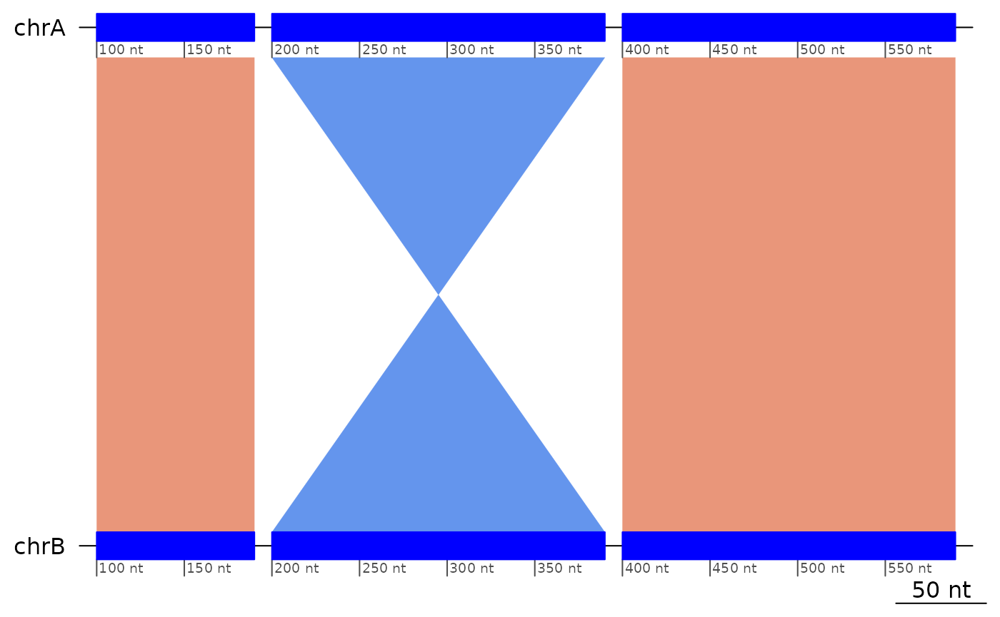

Structural Variants
Charles Plessy
13 December, 2021
Source:vignettes/StructuralVariants.Rmd
StructuralVariants.RmdStructural Variants
The GBreaks() objects here are provided as lazy data and by convention their name always start with example.
Colinearity
Definition
We define structural variants as patterns of interruption of the colinearity between genomes.
Colinearity is a property of pairs of mapped regions.
plotApairOfChrs(exampleColinear, main = "Two colinear regions")Regions that mapped on reverse strands and in reverse order are also colinear.
plotApairOfChrs(reverse(exampleColinear), main = "Two colinear regions on different strands")
Regions that are only in reverse order, or only mapped on opposite strands are not colinear.
plotApairOfChrs(exampleNotColinear, main = "Same strand but not colinear")
plotApairOfChrs(reverse(exampleNotColinear), main = "Both on opposite strand but not colinear")
In this example, the syntenic chromosomes are called chrA and chrB, but the names do not matter.
Technical details
Remember that the flagColinearAlignments() function puts the flag on the first member of the pair, ordered by the sequence on the target genome.
flagColinearAlignments(exampleColinear)## GBreaks object with 2 ranges and 2 metadata columns:
## seqnames ranges strand | query colinear
## <Rle> <IRanges> <Rle> | <GRanges> <logical>
## [1] chrA 100-150 + | chrB:100-150 TRUE
## [2] chrA 251-300 + | chrB:251-300 FALSE
## -------
## seqinfo: 1 sequence from an unspecified genome
flagColinearAlignments(reverse(exampleColinear))## GBreaks object with 2 ranges and 2 metadata columns:
## seqnames ranges strand | query colinear
## <Rle> <IRanges> <Rle> | <GRanges> <logical>
## [1] chrA 1-50 - | chrB:251-300 TRUE
## [2] chrA 151-201 - | chrB:100-150 FALSE
## -------
## seqinfo: 1 sequence from an unspecified genome
# Note the tolerance window
flagColinearAlignments(exampleColinear, tol = 100)## GBreaks object with 2 ranges and 2 metadata columns:
## seqnames ranges strand | query colinear
## <Rle> <IRanges> <Rle> | <GRanges> <logical>
## [1] chrA 100-150 + | chrB:100-150 FALSE
## [2] chrA 251-300 + | chrB:251-300 FALSE
## -------
## seqinfo: 1 sequence from an unspecified genome
# Strandless mappings can also be colinear
exampleColinear |> plyranges::mutate(strand = "*") |> flagColinearAlignments()## GBreaks object with 2 ranges and 2 metadata columns:
## seqnames ranges strand | query colinear
## <Rle> <IRanges> <Rle> | <GRanges> <logical>
## [1] chrA 100-150 * | chrB:100-150 TRUE
## [2] chrA 251-300 * | chrB:251-300 FALSE
## -------
## seqinfo: 1 sequence from an unspecified genome
flagColinearAlignments(exampleNotColinear)## GBreaks object with 2 ranges and 2 metadata columns:
## seqnames ranges strand | query colinear
## <Rle> <IRanges> <Rle> | <GRanges> <logical>
## [1] chrA 100-150 + | chrB:201-251 FALSE
## [2] chrA 251-300 + | chrB:50-100 FALSE
## -------
## seqinfo: 1 sequence from an unspecified genomeTo make some sanity checks against the other flagging functions there is also an object containing three colinear mappings.
flagColinearAlignments(exampleColinear3)## GBreaks object with 3 ranges and 2 metadata columns:
## seqnames ranges strand | query colinear
## <Rle> <IRanges> <Rle> | <GRanges> <logical>
## [1] chrA 100-200 + | chrB:100-200 TRUE
## [2] chrA 201-300 + | chrB:201-300 TRUE
## [3] chrA 301-400 + | chrB:301-400 FALSE
## -------
## seqinfo: 1 sequence from an unspecified genomeInversions
Trivial inversions
Trivial inversions are triplets of mapped regions that would be colinear if the strand of the second one were reversed. Note that, like for colinear patterns, the flag is put on the first mapping of the triplet.
exampleInversion |> flagColinearAlignments() |> flagInversions()## GBreaks object with 3 ranges and 3 metadata columns:
## seqnames ranges strand | query colinear inv
## <Rle> <IRanges> <Rle> | <GRanges> <logical> <Rle>
## [1] chrA 100-190 + | chrB:100-190 FALSE TRUE
## [2] chrA 210-291 - | chrB:210-291 FALSE FALSE
## [3] chrA 301-400 + | chrB:301-400 FALSE FALSE
## -------
## seqinfo: 1 sequence from an unspecified genome
plotApairOfChrs(exampleInversion, main = "An inverted region flanked by colinear regions")
plotApairOfChrs(reverse(exampleInversion), main = "An inverted region flanked by colinear regions (opposite strands)")
# Removing the inversion restores colinearity
exampleInversion[-2] |> flagColinearAlignments()## GBreaks object with 2 ranges and 2 metadata columns:
## seqnames ranges strand | query colinear
## <Rle> <IRanges> <Rle> | <GRanges> <logical>
## [1] chrA 100-190 + | chrB:100-190 TRUE
## [2] chrA 301-400 + | chrB:301-400 FALSE
## -------
## seqinfo: 1 sequence from an unspecified genome
# Flipping the inversion restores colinearity
exampleInversion |> plyranges::mutate(strand = "+") |> flagColinearAlignments()## GBreaks object with 3 ranges and 2 metadata columns:
## seqnames ranges strand | query colinear
## <Rle> <IRanges> <Rle> | <GRanges> <logical>
## [1] chrA 100-190 + | chrB:100-190 TRUE
## [2] chrA 210-291 + | chrB:210-291 TRUE
## [3] chrA 301-400 + | chrB:301-400 FALSE
## -------
## seqinfo: 1 sequence from an unspecified genome
# Note the tolerance window
flagInversions(exampleInversion, tol = 10)## GBreaks object with 3 ranges and 2 metadata columns:
## seqnames ranges strand | query inv
## <Rle> <IRanges> <Rle> | <GRanges> <Rle>
## [1] chrA 100-190 + | chrB:100-190 FALSE
## [2] chrA 210-291 - | chrB:210-291 FALSE
## [3] chrA 301-400 + | chrB:301-400 FALSE
## -------
## seqinfo: 1 sequence from an unspecified genomeDouble inversions
Double inversions are the result of two overlapping trivial inversions, and must be detected with a different approach.
Here we show a triplet resulting from a double inversion, flanked by two regions that did not move.
# Starting point: 5 colinear blocks
exampleColinear5 |> plotApairOfChrs()
# Then, lets have an inversion that encompasses blocks 1 and 2.
exampleInversion5uncollapsed |> plotApairOfChrs()
# Finally another inversion takes place around the new blocks 3 and 4
exampleDoubleInversion |> plotApairOfChrs()Same story but showing coalesced alignments.
# Starting point: 5 colinear blocks
exampleColinear5 |> coalesce_contigs() |> plotApairOfChrs()
# Then, lets have an inversion that encompasses blocks 1 and 2.
exampleInversion5uncollapsed |> coalesce_contigs() |> plotApairOfChrs()
# Finally another inversion takes place around the new blocks 3 and 4
exampleDoubleInversion |> coalesce_contigs() |> plotApairOfChrs()
Transolocations
If a region has moved, but is not an inversion, then it is a translocation.
exampleTranslocation |> flagColinearAlignments() |> flagInversions()## GBreaks object with 3 ranges and 3 metadata columns:
## seqnames ranges strand | query colinear inv
## <Rle> <IRanges> <Rle> | <GRanges> <logical> <Rle>
## [1] chrA 100-200 + | chrB:100-200 FALSE FALSE
## [2] chrA 201-300 + | chrC:201-300 FALSE FALSE
## [3] chrA 301-400 + | chrB:301-400 FALSE FALSE
## -------
## seqinfo: 1 sequence from an unspecified genome
plotApairOfChrs(exampleTranslocation)
It does not matter if the region moved on the minus strand
exampleTranslocation2 |> flagColinearAlignments() |> flagInversions()## GBreaks object with 3 ranges and 3 metadata columns:
## seqnames ranges strand | query colinear inv
## <Rle> <IRanges> <Rle> | <GRanges> <logical> <Rle>
## [1] chrA 100-200 + | chrB:100-200 FALSE FALSE
## [2] chrA 201-300 - | chrC:201-300 FALSE FALSE
## [3] chrA 301-400 + | chrB:301-400 FALSE FALSE
## -------
## seqinfo: 1 sequence from an unspecified genome
plotApairOfChrs(exampleTranslocation2)
Insertions / Deletions (indels)
NOTE that searching for insertion/deletions make little sense in one-to-one alignment unless the maximal distance for colinearity is set to a meaningful value.
exampleDeletion## GBreaks object with 3 ranges and 1 metadata column:
## seqnames ranges strand | query
## <Rle> <IRanges> <Rle> | <GRanges>
## [1] chrA 100-200 + | chrB:100-200
## [2] chrA 201-300 + | chrC:401-500
## [3] chrA 301-400 + | chrB:201-300
## -------
## seqinfo: 1 sequence from an unspecified genome
plotApairOfChrs(exampleDeletion)
exampleInsertion## GBreaks object with 3 ranges and 1 metadata column:
## seqnames ranges strand | query
## <Rle> <IRanges> <Rle> | <GRanges>
## [1] chrA 100-200 + | chrB:100-200
## [2] chrA 201-300 + | chrB:301-400
## [3] chrC 401-500 + | chrB:201-300
## -------
## seqinfo: 2 sequences from an unspecified genome
plotApairOfChrs(exampleInsertion)